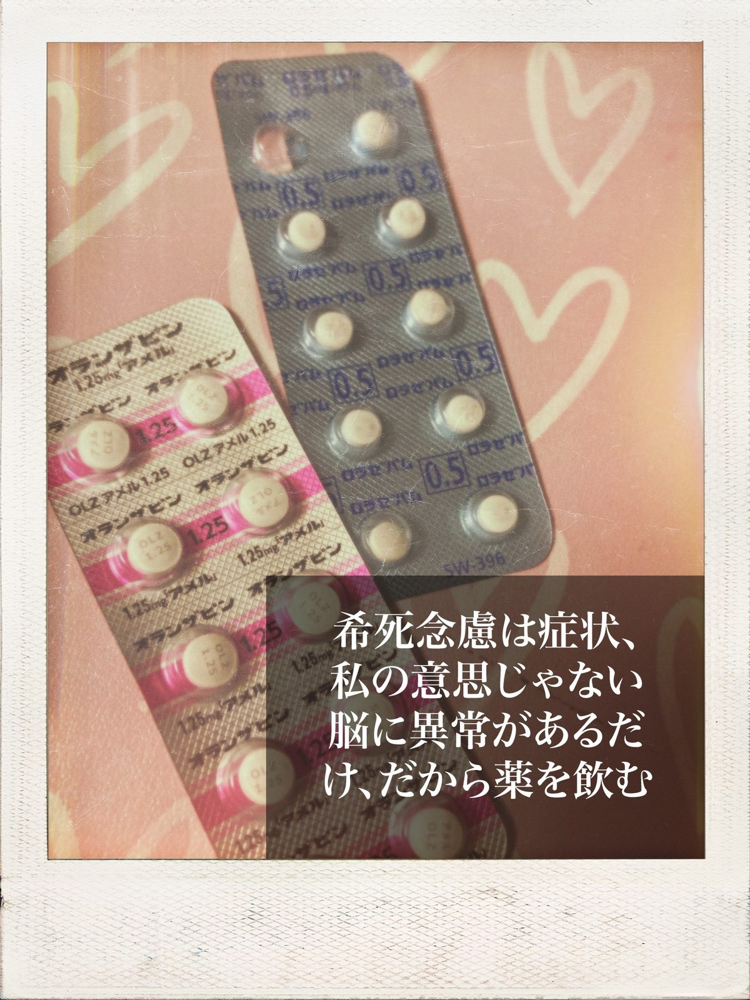

混合期
生きる鬱なのに行動力がある。変だな。
ちょっと前の躁状態はそこそこ高かった。だからずーーーんと鬱が来たと思ってたのに。
希死念慮と衝動性の相性は良すぎる。危険。
逃げたい死にたい消えたい。
思わず家を飛び出した。踏切の前のベンチでぼーっとする。
でも私には理性がある。家族がいる。守る未来がある。
それさえも投げ出して逃げたい。疲れた。私は追い込まれている。自分に。自分自身が私の首を絞めている。
我慢せよ。抑えろ。やるべき事をやり、やりたいことはやめろ。
私が私に追い込まれている。だから逃げ出しても死ねない。
私はオランザピンとロラゼパムをのんだ。馬鹿なことする前に。でもせめてもの抵抗で、1錠のところ、2~4錠ずつ口に放り込んだ。
逃げられないなら、寝てしまおう。
家族に連絡する。
家族がむかえにきてくれる。迷惑をかけてしまった。でも死ななかったから許して。逃げ出してしまわなければ、私は私に殺されるところだったの。
好きなことをしていい。
我慢しなくていい。
それを忘れてしまうの。私は生きが出来なくなってしまうの。ずっと。私を無視する私のせいで。
混合期が来ている。
お金をいくら好き勝手使ったのか分からない。まだ足りないの。もっと買いたい。
達成感が得られるの。
自由に外出することや、好きに買えると言うことに達成感を感じるの。
許して。私は家事をきちんとしてる。
洗濯を1日3回している。トイレ掃除もしている。育児も、夏休みの宿題の面倒を見たり、病院に連れて行ったりしてる。こんなにやっている。
だから自由をちょうだい、私を許してください。私が私でいられることを許してください。
私は脳にバグがあるの。そのために双極性障害になっているらしいの。だからお薬を飲むの。苦しくて辛いけど生きたいの。私の希死念慮は、「生きたいなの」。